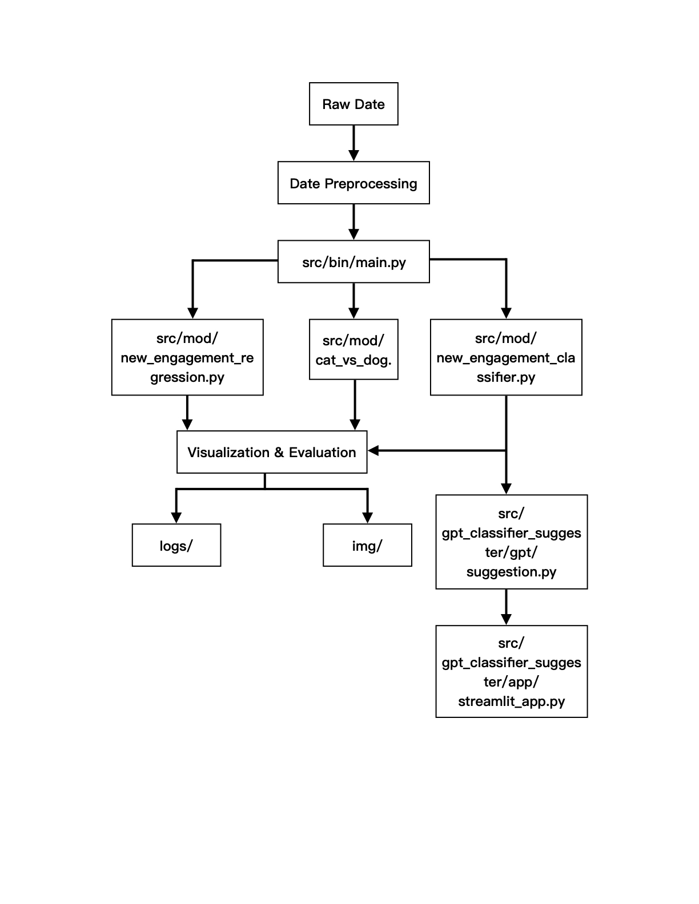

Reddit Engagement Analyzer
Analyze and predict engagement in Reddit pet adoption posts based on linguistic style, sentiment, and word usage. This project powers two interactive demos designed to help shelters improve adoption post wording and understand language tendencies across cat and dog communities.
Team Members
- Jiahui Liu
- Siru Wu
- Yiqin Zhou
- Jiaqi Wei
Project Overview
We analyze thousands of Reddit posts and comments to understand how language—particularly emotional tone, part-of-speech features, and sentiment—impacts user engagement.
This project focuses on Reddit adoption posts (cats & dogs) and aims to optimize their engagement performance (likes, comments, shares). By leveraging advanced machine learning techniques, we aim to provide actionable insights for shelters and individuals to improve their posts’ chances of going viral, increasing user interaction.
Core Capabilities
Engagement Classification
- Objective: Predict whether a Reddit post will have high or low engagement based on the content’s linguistic features.
- Method: We train a classification model using features such as sentiment scores, word usage, emotional tone, and part-of-speech tagging. The model categorizes posts into two classes: high engagement (predicted likelihood of high user interaction) and low engagement.
Engagement Regression
- Objective: Estimate the precise engagement score of a Reddit post, providing a continuous value representing how engaging the content is.
- Method: We apply regression analysis techniques to predict the engagement score based on textual features. This helps shelters or users to gauge how well their posts might perform in terms of likes, comments, and shares.
Cat vs Dog Linguistic Divergence Analysis
- Objective: Investigate linguistic differences between cat and dog posts to understand the unique features of each pet’s community and optimize post style.
- Method: We compare the use of certain linguistic elements (like adjectives and verbs) across cat and dog adoption posts. This provides insights into the tone, sentiment, and language preferences of different pet communities.
How the Classifier Guides GPT Suggestions
The classifier plays a crucial role in guiding GPT-4 to provide specific suggestions for improving engagement in Reddit adoption posts.
Flow:
Training the Classifier:
- The classifier is trained on historical Reddit adoption posts, with the target variable being the engagement score (high or low). It learns the linguistic patterns that correlate with higher engagement. The classifier uses features like sentiment scores, word choice (adjectives and verbs), title length, urgency, and the presence of certain keywords (e.g., adoption, rescue).
Engagement Prediction:
- Once trained, the classifier is used to predict the engagement potential of new Reddit posts. For each post, the classifier outputs a probability score representing the likelihood of high engagement (above a 50% threshold).
Guiding GPT:
- The classifier’s output (high or low engagement prediction) is fed into GPT-4 as part of the input prompt. Based on this classification, GPT is tasked with providing actionable suggestions for improving engagement.
- If the classifier predicts high engagement, GPT may suggest ways to amplify the post’s impact (e.g., highlighting emotional tone, optimizing call-to-action phrases, or fine-tuning the sentiment).
- If the classifier predicts low engagement, GPT provides suggestions to improve the post, such as making the content more urgent, appealing, or concise, and increasing the emotional appeal.
GPT-4 Suggestion Output:
- Based on the predictions from the classifier, GPT-4 generates suggestions on improving the language, tone, or structure of the post to increase user interaction. This might include: 1. Rewording parts of the post to invoke a stronger emotional response. 2. Reframing the language to make the pet’s characteristics stand out more. 3. Including a more urgent call to action.
Final Suggestions:
- The suggestions from GPT-4 are presented to the user (or shelter) for them to use in editing their posts, thus optimizing their chances of receiving higher engagement.
Project Structure
5400_final_project/
├── data/
│ ├── raw-data/ # Original Reddit post/comment datasets
│ ├── processed-data/ # Cleaned but not feature-engineered
│ └── preprocessed-data/ # Final feature-enriched datasets for modeling
│
├── src/
│ ├── bin/
│ │ └── main.py # CLI entry point for model pipelines
│ ├── demo/
│ │ └── cat_vs_dog_demo.html
│ ├── mod/ # Model Using
│ │ ├── new_engagement_regression.py
│ │ ├── new_engagement_classifier.py
│ │ └── cat_vs_dog.py # Word suggestion logic
│ ├── utils/ # Data collection and preprecessing
│ │ ├── data-collection/ # Reddit crawling and filtering scripts
│ │ └── data_preprocessing/
│ │ └── preprocessing.py
│ ├── gpt_classifier_suggester/ # Demo for impove and suggest posts
│ │ ├── app/streamlit_app.py # Streamlit app frontend
│ │ ├── gpt/suggestion.py # Suggestion logic (GPT-powered or custom)
│ │ ├── model/.pkl # Trained pipelines (.pkl)
│ │ └── prediction/predictor.py # Prediction backend
│ └── img/ # Visuals: ROC curves, feature importance, reports
│
├── tests/
│ ├── output/
│ ├── data_split.py
│ ├── test_cat_vs_dog.py # Unit tests
│ └── test_part1.py # Test outputs: plots & CSVs
│
├── logs/
├── .env # ignored the GPT API
├── README.md
├── pyproject.toml
├── environment.yml
└── pytest.iniArchitecture Overview

- src/utils:
- data-collection/: Collect the data using Reddit API
- data-preprocessing/: Preprocess data to divide cats and dogs with comments and posts.
- src/mod/:
- new_engagement_classifier.py: Train classifiers to predict high/low engagement. Then train the model.pkl and save to gpt_classifier_suggester/model/.pkl
- new_engagement_regression.py: Regression analysis for predicting engagement scores.
- cat_vs_dog.py: Compare linguistic style divergence between cat and dog posts.
- src/gpt_classifier_suggester/:
- gpt/suggestion.py: Generate GPT suggestions by using classifier model.
- prediction/predictor.py: Feature engineering + prediction pipeline.
- app/streamlit_app.py: Interactive web app for Reddit optimization.
- tests/: Unit and smoke tests for all modules.
- data_split.py: Split the raw data with 20% train data and save to tests/data
- test_cat_vs_dog.py: test the model in src/mod/cat_vs_dog.py
- test_part1: test the model for src/mod/new_engagement_classifier.py and new_engagement_regression.py
Data Source
The project uses preprocessed Reddit data available at:
https://drive.google.com/drive/folders/1kyAefJXVvzBxXt4_EZ2XVnrMzkHcumhn?dmr=1&ec=wgc-drive-hero-goto
Please use “preprocessed-data”, which is the already preprocessed data. Please download and place the folder as data/ in your project root directory.
Installation
1. Install environment:
conda env create -f environment.yml
conda activate reddit-engagement-analyzer2. Install project locally:
pip install -e .Usage
Run specific modules from the command line:
# Regression analysis
python src/bin/main.py --task regression
# Engagement classification
python src/bin/main.py --task classifier
# Cat vs Dog divergence analysis
python src/bin/main.py --task cat_vs_dog
# Run all tasks
python src/bin/main.py --task allLaunch the interactive Streamlit web app:
# Run Streamlit app:
streamlit run src/gpt_classifier_suggester/app/streamlit_app.pyRun tests:
First run tests/data_split.py to get test data
Then
# Rub tests
pytest tests/Note on API Key for GPT Suggestions
This project uses OpenAI’s GPT-4 API (which uses in src/gpt_classifier_suggester/gpt/suggestion.py) to generate language suggestions for improving Reddit adoption posts. To protect security and comply with best practices, the API Key is not hard-coded in the source code. Instead, we use a .env file and load the API Key via environment variables.
Before running the Streamlit web app (streamlit_app.py), you must:
- Create a .env file in the project root with the following content: OPENAI_API_KEY=your-openai-api-key-here
- Install the python-dotenv package (already included in environment.yml and pyproject.toml).
- Then you can run: “streamlit run src/gpt_classifier_suggester/app/streamlit_app.py”
If no API key is provided, the GPT-powered suggestion feature will not work, but the prediction model will still function.
Findings & Conclusion
Key Findings
- Posts containing emtional words (e.g., “adorable”, “loving”, “friendly”) and community-oriented pronouns (e.g., “you”, “we”) are more likely to receive higher engagement.
- Emotional tone, presence of adjectives, and emojis positively correlate with higher engagement scores.
- Linguistic style analysis revealed that dog posts tend to use more action-oriented verbs (“running”, “jumping”), while cat posts favor calmer adjectives (“fluffy”, “lazy”).
Conclusion
Our project successfully demonstrates that Reddit adoption post engagement can be predicted and optimized through linguistic features. By combining machine learning classification with GPT-based suggestions, we provide shelters and pet advocates a tool to craft more engaging posts, potentially improving adoption success rates.